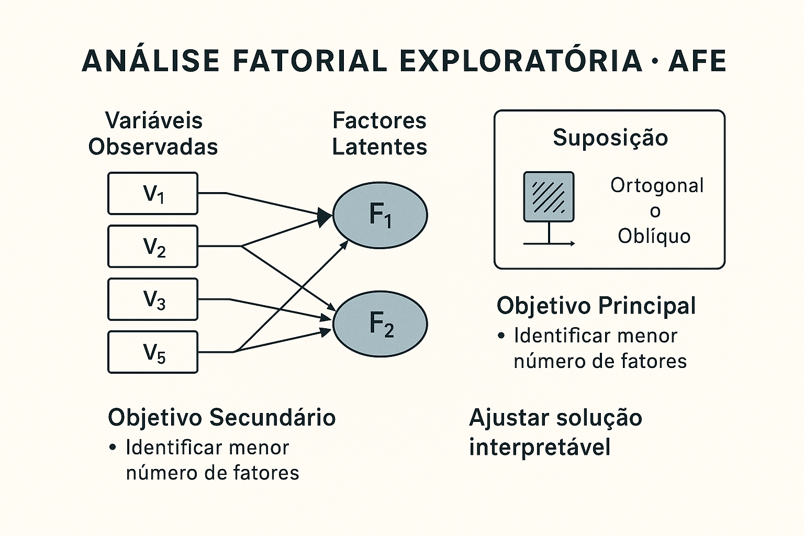

A Análise Fatorial (AF) é uma técnica estatística multivariada usada para investigar a estrutura latente de um conjunto de variáveis observadas. Seu principal objetivo é reduzir a dimensionalidade dos dados, identificando fatores (constructos) subjacentes que explicam as correlações entre os itens ou variáveis.
A análise fatorial (AF), de modo geral, é uma técnica estatística multivariada que tem como princípio analisar a estrutura das inter-relações (correlações) entre um grande número de variáveis, ou seja, descrever a estrutura de dependência de um conjunto de variáveis através da criação de fatores, que são variáveis que, supostamente, medem aspectos comuns (Hair et al, 2005). Com o emprego dessa técnica, inicialmente podem-se identificar as dimensões isoladas da estrutura dos dados e então determinar o grau em que cada variável é explicada por cada dimensão ou fator.
Segundo Mingoti (2005), a AF tem como objetivo principal descrever a variabilidade original do vetor aleatório X, em termos de um número menor M de variáveis aleatórias, chamadas de fatores comuns e que estão relacionadas com o vetor original X através de um modelo linear. Neste modelo, parte da variabilidade de X, é atribuída aos fatores comuns, sendo o restante da variabilidade de X atribuído ás variáveis que não foram incluídas no modelo, ou seja, o erro aleatório.
Para Barroso e Artes (2003), a AF é uma técnica que descreve a estrutura de dependência de um conjunto de variáveis, através da criação de fatores, que são variáveis que, supostamente, medem aspectos comuns.
Reis (1997) descreve a AF como um conjunto de técnicas cuja finalidade é representar ou descrever um número de variáveis iniciais a partir de um menor número de variáveis hipotéticas. Trata-se de uma técnica estatística multivariada que, a partir da estrutura de dependência existente entre as variáveis de interesse (em geral representada pelas correlações ou covariâncias entre essas variáveis), permite a criação de um conjunto menor de variáveis (variáveis latentes ou fatores), obtidas a partir das originais.
De acordo com Malhotra (2001), análise fatorial é um nome genérico que denota uma classe de processos essencialmente para redução e sumarização dos dados”.
A análise fatorial é uma técnica de interdependência na qual todas as variáveis são simultaneamente consideradas, cada uma relacionada com todas as outras, empregando o conceito da variável estatística, a composição linear das variáveis. Ela difere das técnicas multivariadas de dependência (Regressão Múltipla, Análise Discriminante, Análise Multivariada de Variância ou Correlação Canônica), nas quais uma ou mais variáveis são explicitamente consideradas como as variáveis de critério ou dependentes e todas as outras são as variáveis preditoras ou independentes.
Na análise fatorial, as variáveis estatísticas (fatores) são formadas para maximizar seu poder de explicação do conjunto inteiro de variáveis, e não para prever uma variável (eis) dependente(s).
Na concepção de Pasquali (2003), a análise fatorial é uma técnica caucada sobre o pressuposto de que uma série de variáveis observadas, medidas, chamadas de variáveis empíricas ou observáveis pode ser explicada por um número menor de variáveis não observáveis, chamadas precisamente de variáveis fontes, mais conhecidas sob o nome de fatores.
As chamadas variáveis fontes seriam a causa do fato de que as variáveis observáveis se relacionam entre si, isto é, são responsáveis pelas intercorrelações (covariâncias) entre as variáveis. Supõe-se que, se as variáveis empíricas se relacionam entre si, é porque elas têm uma causa comum que produz esta correlação entre elas. E a esta causa comum que se chama de fator e cuja descoberta é precisamente a tarefa da análise fatorial. Então, nestas afirmações já fizemos dois postulados que a análise fatorial assume (Pasquali, 2003):
- Princípio da Parcimônia ou de Rank Reduction: Um número menor de variáveis-fonte é suficiente para explicar uma série maior de variáveis observáveis, isto é, redução do posto da matriz das intercorrelações entre as variáveis observáveis.
- Princípio da Causalidade: As variáveis-fonte são as causas da covariância entre as variáveis observáveis, ou seja, a análise fatorial é um modelo causal.
1.1 Tipos de Análise Fatorial
Técnicas analíticas fatoriais podem atingir seus objetivos ou de uma perspectiva exploratória ou de uma confirmatória. Existe um debate contínuo sobre o papel apropriado da análise fatorial, onde muitos pesquisadores consideram a AF apenas exploratória, útil na busca da estrutura em um conjunto de variáveis ou como um método de redução de dados. Sob essa perspectiva, as técnicas analíticas fatoriais consideram o que os dados oferecem e não estabelecem restrições a priori sobre o número de componentes a serem extraídos. Para muitas, talvez a maioria das aplicações, esse uso da AF é adequado. No entanto, em outras situações, o pesquisador tem preconcebido idéias sobre a real estrutura dos dados, baseado em suporte teórico ou em pesquisas anteriores. Ele pode desejar testar hipóteses envolvendo questões sobre, por exemplo, quais variáveis deveriam ser agrupadas em fator ou número exato de fatores. Nesses casos, o pesquisador espera que a análise fatorial desempenhe um papel confirmatório, ou seja, avalie o grau em que os dados satisfazem à estrutura esperada.
1.1.1 Análise Fatorial Exploratória - AFE
Na prática da pesquisa científica, é comum que o investigador se depare com conjuntos de dados sobre um fenômeno sem dispor de um modelo teórico bem estabelecido que oriente a análise. Isso pode ocorrer por diversos motivos:
- Ausência de investimento na formulação teórica do problema;
- Lacunas existentes na literatura;
- Inadequação de modelos prévios aos dados observados.
Ainda assim, mesmo em sua forma exploratória, a Análise Fatorial requer pressupostos mínimos de natureza teórica. O mais fundamental deles é a suposição de que existe uma estrutura fatorial latente por trás das variáveis observadas — ou seja, fatores ortogonais (independentes) ou oblíquos (correlacionados) que explicam as correlações entre as variáveis.
|  |
1.1.1.1 Essa Suposição Exclui:
- Relações causais entre fatores;
- Relações causais entre variáveis observadas;
- Correlações entre fatores únicos e variáveis externas.
O principal objetivo da Análise Fatorial Exploratória é identificar o menor número possível de fatores latentes que consiga reproduzir a matriz de correlações entre as variáveis observadas com boa precisão.
1.1.2 Análise Fatorial Confirmatória - AFC
A Análise Fatorial Confirmatória (AFC) é uma técnica que busca testar empiricamente um modelo teórico previamente especificado. Diferente da Análise Fatorial Exploratória, que busca descobrir padrões ocultos nos dados, a AFC parte de uma hipótese clara e formalizada sobre a estrutura dos fatores e suas relações com as variáveis observadas.
Verificar se a estrutura fatorial hipotética proposta pelo pesquisador é compatível com os dados coletados. Em outras palavras, a AFC testa se:
- O número de fatores especificado é adequado;
- Os itens associados a cada fator são coerentes;
- O modelo teórico explica bem a covariância entre as variáveis.
1.2 Benefícios da Análise Fatorial
A Análise Fatorial oferece diversas vantagens para pesquisadores, professores e estudantes que lidam com dados complexos. Entre os principais benefícios, destacam-se:
Redução de Variáveis: Transforma dezenas de variáveis correlacionadas em poucos fatores que representam a essência do fenômeno estudado.
- Em uma pesquisa sobre qualidade de vida, 30 itens do questionário são agrupados em apenas 4 fatores principais: saúde física, saúde mental, ambiente e relações sociais. Isso torna os resultados mais claros e aplicáveis.
Clareza Conceitual: Ajuda a revelar dimensões teóricas latentes, mesmo quando elas não são diretamente observáveis.
- Em um estudo educacional, respostas a itens sobre “motivação” mostram que existem, na verdade, dois fatores distintos: motivação intrínseca (gosto pelo conteúdo) e motivação extrínseca (recompensas externas).
Melhoria de Questionários: Permite verificar quais itens de um teste ou questionário são redundantes, pouco informativos ou mal formulados.
- Na validação de um instrumento de avaliação de clima organizacional, a análise fatorial revelou que dois itens estavam praticamente duplicando a mesma informação. Eles foram removidos para tornar o instrumento mais enxuto e eficiente.
Aplicabilidade Ampla: Pode ser utilizada em várias áreas do conhecimento, tanto em contextos acadêmicos quanto profissionais.
1.2.1 Exemplo Prático:
Psicologia: identificar fatores de personalidade a partir de itens do 16PF.
Marketing: agrupar consumidores com base em seus comportamentos de compra (ex: fatores como - preço, marca e experiência).
Saúde pública: entender dimensões de qualidade de atendimento em hospitais.
Educação: estruturar competências avaliadas em provas e testes.